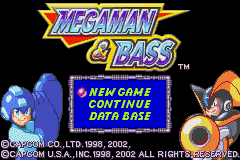

|
Megaman & Bass
ออกวางจำหน่ายเมื่อวันที่ 24 เดือนเมษายน ปี 1998 ภาค Japan ในระบบ SuperFamicom
ซึ่งได้วางขายในชื่อ RockMan & Forte
ต่อมาในวันที่ 10 เดือน สิงหาคม ปี 2002 ได้ออกจำหน่ายภาค Japan ในระบบ GameBoy
Advance
ส่วนภาค English ได้ออกวางจำหน่ายเมื่อวันที่ 12 เดือนมีนาคม ปี 2003 ในระบบ
GameBoy Advance
และได้เปลี่ยนชื่อเป็น Megaman & Bass
อีกทั้งยังได้ออกจำหน่ายในยุโรป เมื่อวันที่ 21 เดือนมีนาคม ปี 2003 ในระบบ
GameBoy Advance เช่นกัน
Story
หลังจากที่ Megaman ได้ปราบ Dr.Wily ลงได้ (ในภาคที่แล้วๆ มา)
โลกก็มีแต่สันติสุขสืบมา
แต่...
ได้มีหุ่นยนต์ตัวหนึ่งบุกไปยึดฐานของ Dr.Wily
อีกทั้งยังได้เข้ามาขโมยหุ่นยนต์ของ Dr.Light ในพิพิธภัณฑ์อีกด้วย
หุ่นยนต์ตัวนั้นมีชื่อว่า KING
ทำให้ Megaman ต้องตามไปจัดการ และเหนือความคาดหมายทั้งปวง
Dr.Wily ยังได้ส่ง Bass ออกมาช่วยเหลือ Megaman เพื่อจัดการ King อีกด้วย
Title

นอกเหนือจากเมนู New Game และ Continue แล้ว
ยังมีเมนู Data Base อีกด้วย
ซึ่งหัวข้อนี้จะมีรายละเอียดของตัวละครต่างๆ ในเกม Megaman
ตั้งแต่ภาค 1 จนถึงภาคนี้ รวมทั้งหมด 100 ตัวละคร
โดยข้อมูลเหล่านี้จะได้มาจากการเก็บสะสม CD ในระหว่างการเล่นเกม
สามารถให้ Megaman และ Bass ช่วยกันเก็บสะสมได้
Player Select
เมื่อกด New Game จะเข้าสู้ฉากเลือกตัวละคร
ซึ่งสามารถเลือกเล่นได้เพียงครั้งละ 1 ตัวเท่านั้น
โดย Megaman และ Bass จะมีความสามารถที่แตกต่างกัน
แต่เนื้อเรื่องจะเหมือนกัน คือ จัดการกับ King ให้ได้
Menu
เมื่อกด Start จะเห็นหน้าจอเมนูที่คุ้นเคย
แต่ภาคนี้ Megaman สามารถเรียก Rush, Beat, Eddie มาช่วยเหลือได้
และมีคำสั่ง NEXT อีกด้วย
เมื่อเลือก NEXT จะเข้าสู้หน้าจอเมนูที่ 2
ภายในหน้าจอนี้ จะมีรายละเอียดต่างๆ
เช่น จำนวนชีวิต, จำนวนน๊อต, จำนวนแผ่น CD
อุปกรณ์เสริม แถวบนจะใช้อัตโนมัติ ไม่ต้องกดสวมใส่
แต่แถวล่างเป็นอุปกรณ์เสริมที่ต้องกดสวมใส่ และใส่ได้ครั้งละชิ้นเดียวเท่านั้น
ด้านซ้ายสุดจะเป็นอุปกรณ์เสริมที่ใช้อยู่
อีกทั้งยังมีคำสั่ง EXIT เพื่อใช้ในการออกจาก Stage ที่กำลังเล่นอยู่
เพราะว่าในภาคหลังๆ นั้น Megaman สามารถกลับเข้าไปเล่นใน Stage ที่ผ่านไปแล้วได้
และสามารถออกได้ตลอดเวลาโดยใช้คำสั่ง EXIT
แต่ว่า อุปกรณ์เสริมต่างๆ ไม่ได้มีมาให้ตั้งแต่แรก ต้องให้ Auto สร้างขึ้นมาให้
โดยการเข้าไปใช้บริการใน Shop
|